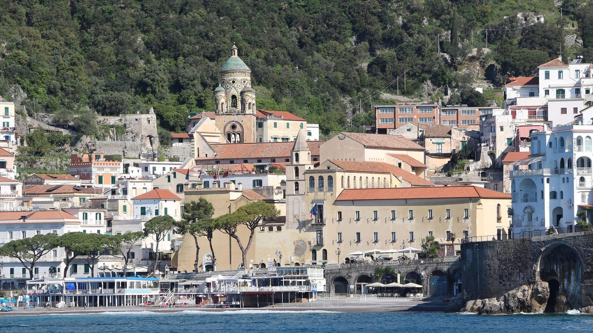

从萨莱诺坐船去阿马尔菲，一个小时的海路。船开出港口时天还阴着，等到拐过第一个海岬，太阳忽然从云缝里落下来，整片海变成那种发亮的蓝。我站在甲板上回头看——悬崖上一排排彩色房屋，一层一层叠进海里，那时候我才明白为什么所有人的相机都举着：这个地方本来就长成明信片的样子。
波西塔诺的台阶比想象中多。从码头往上走，行李在石阶上磕出节奏，每转一个弯都有一面开着九重葛的墙，粉的、紫的、白的，被海风吹得整面墙都在动。我在半山的一家小店买了冰镇的柠檬苏打，坐在台阶上喝完，看下面的人从沙滩走上来的那一段路——大家走到一半都得停一下，扶着栏杆喘气，然后笑着继续。

在阿马尔菲的第一个下午，我去了山腰上的一片柠檬园。园主递给我一个刚摘的柠檬，比拳头还大，皮厚得像橘子，凑近闻的时候香气一下子冲上鼻子，是整个下午最强烈的一次记忆。他说这里的人不把柠檬当水果，它是一块地的脾气、一种颜色，甚至是这整条海岸的生活方式。我在园子边的长椅上坐了很久，什么也没做。
海岸公路的公交是我坐过最刺激的交通工具。司机一边摁喇叭一边朝对面来车挥手，窗外的树几乎擦着玻璃过去，每次转弯都能看到一个更蓝的海。黄昏我回到阿马尔菲的广场，坐在台阶上看孩子们踢球，卖冰淇淋的店排着队，教堂的钟敲了七下。有人在广场边弹吉他，弹得很随意，大家各做各的事，谁也没有停下来听。
离开那天下雨，海是铅灰色的，能见度很低，明信片里的那种蓝全都不见了。我坐在渡轮上，反而更喜欢这一个版本——它让我相信，那些漂亮的地方也过着普通的日子：要洗衣服，要修屋顶，要在雨里等一班迟到的公交。